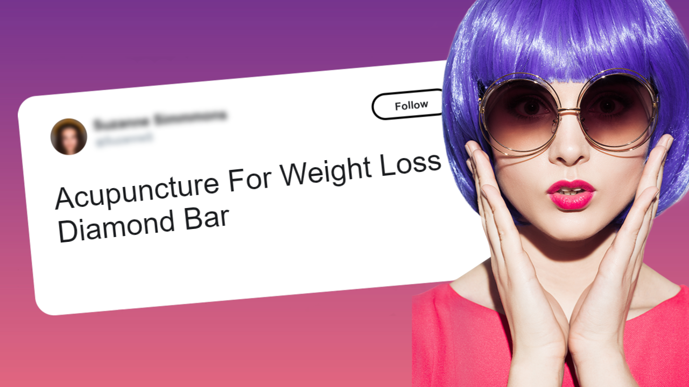

How Acupuncture Works - Acupuncture for Weight Loss
by Boxnfly
Posted on 06-07-2021 12:27 PM

Cost of Acupuncture for Weight Loss
You can enable families to live a healthy lifestyle by providing the best holistic care available. In addition to standard chiropractic treatments, we provide acupuncture for pain relief, pregnancy-related problems, addiction rehabilitation, and various other disorders.
Decompression therapy is used to treat herniated/bulging discs that cause arm and leg discomfort, numbness, and tingling. Cold laser treatment hastens the healing of sprains and strains. Blood testing can offer nutritional deficiency tests, vitamins, acupuncture for weight loss programs, and other medically approved therapy.
Is it true that cupping acupuncturists are in short supply? Extend your look for cupping acupuncturists in Diamond Bar, California. Acupuncturists who use cupping Cupping is a centuries-old method for reducing pain and stiffness. To apply pressure, a round glass cup is put on the skin. These experts can assist you if you are seeking cupping acupuncture in Diamond Bar, CA, or a cupping acupuncturist in Diamond Bar, CA.
Cupping treatment professionals, cupping acupuncturists, and cupping acupuncturists are among them. Cupping acupuncture treatments for back pain, weight loss, and other pain alleviation cupping acupuncture treatments are also offered.
Hyosu Kim is an acupuncturist and oriental medicine diplomate based in Diamond Bar, California. Kim is a certified acupuncturist in California. He has also worked in sports medicine and natural pain treatment for over a decade. He specializes in the treatment of pain, orthopedic difficulties, rehabilitation, fitness, acupuncture for weight loss, and digestive concerns.
Acupuncture treatments range in price from $50 to $90 per session for weight loss, back pain, smoking cessation, migraine relief, and general rehabilitation. Acupuncture for reproductive and aesthetic objectives might range from $100 to $150 per session or more. An overview of the expenses of acupuncture therapy is provided below. Continue reading below the table to find out how the cost of acupuncture sessions varies depending on the approach.
Should you try acupuncture for weight loss?

Your body has an extraordinary ability to repair itself. Sometimes the body needs to be guided. Acupuncture stimulates the body's inherent healing mechanisms by opening and relaxing muscles and establishing new energy flow channels. It aids in treating pain, anxiety, depression, headaches, acupuncture for weight loss, and a variety of other ailments. It has been used to heal numerous diseases for over 2,000 years, and the current study has proven it to be highly effective.
For thousands of years, traditional Chinese and Korean medicine has been practiced. Physicians have utilized acupuncture in the United States since the 1800s. With the ongoing popularity of this age-old treatment, researchers were forced to conduct a more in-depth, scientific examination of what acupuncture has to offer.
Acupuncture is currently thought to promote fertility and aid in weight loss, pain relief, and stress reduction. As a result, while most Western practitioners use acupuncture to treat pain, some academics and doctors believe it may also aid with contraception.
Acupuncture Weight Loss Advantages

A growing weight of evidence-based study from western scientific research supports the efficacy of acupuncture in treating a wide range of illnesses. According to the most recent and high-quality systematic research, integrating acupuncture into typical therapy offers clinically substantial advantages.
Acupuncture stimulates the nervous system and induces the release of neurochemical messenger molecules in Western medicine. The chemical changes that ensue impact the body's homeostatic processes, supporting physical and emotional well-being. Acupuncture point stimulation has been found to influence brain regions known to decrease pain and stress sensitivity.
Through knee pain therapy, Aligned Modern Health examines all potential avenues of alleviation for our patients. When coupled with weight loss programs and physical rehabilitation, acupuncture may be pretty successful.
Our doctors want to do more than relieve pain for their patients; they also want to help them rehabilitate and avoid recurrent knee issues. Although many patients see improvements in joint function after just one treatment, aligned contemporary health advises a series of treatments for long-term healing.
How Does Acupuncture Work?
As with any other therapy, consult your doctor before starting acupuncture. To ensure that acupuncture is safe, it is essential to discuss it with the interested individual. In some instances, acupuncture may aggravate an underlying illness.
In people prone to bleeding or taking blood thinners, acupuncture needles might induce bleeding or severe bruises. Acupuncture, which involves delivering electrical pulses to the hand, can cause a pacemaker to malfunction if the patient has one. If you are pregnant, acupuncture may induce labor and increase your chances of having a preterm baby.
Work, family, and social commitments are all sources of stress. The need to perform, stay awake, succeed, and push yourself to your limitations. A seemingly endless stream of purportedly fascinating "news." All of this may make even the most composed person uneasy, and it can be frightening for people who suffer from anxiety. Acupuncture may be an excellent alternative to medicines for individuals who are unable to find relief.
After reading our previous blogs on acupuncture sites for headaches, the processes underpinning how it works should be transparent.
Acupuncture, fortunately, does not require a prescription. If you enjoy it, go for it and test some discomfort in your neck! Please be aware that you may have to pay cash according to customer surveys as many insurance companies don't cover therapies such as acupuncture and massages.(However, you can make a case for coverage by obtaining a letter from your doctor stating why the treatment is medically required for your pain.)
Acupuncture is becoming more popular, and it is now acknowledged as a legitimate therapy for various diseases. Despite its popularity, many individuals are ignorant of how or why acupuncture works. This procedure, which entails inserting tiny, sterilized needles into specific places, has been used for hundreds of years, but it has undergone significant modifications.
According to Chinese medicine, "qi" (pronounced "chee," meaning "vital energy") circulates throughout the body via passageways known as "meridians," which connect all main organs. According to traditional Chinese medicine, diseases and illnesses arise when the flow of qi is disturbed, throwing both the body and mind out of balance.
Acupuncturists treat illnesses such as arthritis, back pain, persistent headaches, and migraines by inserting tiny needles into meridians in the arms, legs, shoulders, and even the toes.
On This Page
Brought To You By: